The Witness for the Prosecution is a short story and play by Agatha Christie. The story was initially published as "Traitor's Hands" in Flynn's, a weekly pulp magazine, in the edition of 31 January 1925. In 1933, the story was published for the first time as Witness for the Prosecution in the collection The Hound of Death that appeared only in the United Kingdom. In 1948, it was finally published in the United States in the collection The Witness for the Prosecution and Other Stories.
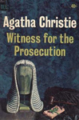
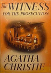
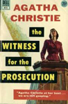
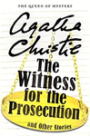
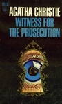
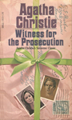
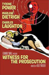
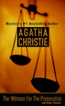
Screen Versions
First adapted as a play, it opened in London on 28 October 1953 at the Winter Garden Theatre, produced by Peter Saunders, and directed by Wallace Douglas. The premiere cast included Derek Blomfield as Leonard Vole, Patricia Jessel as Romaine Vole and David Horne as Sir Wilfrid Robarts.
A film version of Witness for the Prosecution was produced in 1957, with Tyrone Power as Leonard Vole, Marlene Dietrich as Christine Vole and Charles Laughton as Sir Wilfrid Robarts QC. The film was adapted by Larry Marcus, Harry Kurnitz and the film's director, Billy Wilder.
In August 2016, Variety reported that Ben Affleck was in talks to direct and star in a remake with the script to be written by Christopher Keyser and with Affleck producing togethr with Matt Damon and Jennifer Todd.
The first television version was produced by BBC Television in 1949, with Dale Rogers as Leonard Vole, Mary Kerridge as Romaine Vole and Derek Elphinstone as Sir Wilfrid Robarts QC. This version was directed by John Glyn-Jones and adapted by Sidney Budd.
A second version was developed for CBS television in 1953, with Tom Drake as Leonard Vole, Andrea King as Romaine Vole and Edward G. Robinson as Sir Wilfrid Robarts QC. This version was directed by Richard Goode and adapted by Anne Howard Bailey.
Another version was developed for Hallmark television in 1982, with Beau Bridges as Leonard Vole, Diana Rigg as Christine Vole and Ralph Richardson as Sir Wilfrid Robarts QC. This version was based on the Billy Wilder movie with adaptions by John Gay, and was directed by Alan Gibson.
The BBC developed another two-part version in 2016 with Kim Cattrall as Emily French, Billy Howle as Leonard Vole, Andrea Riseborough as Romaine Vole, Toby Jones as John Mayhew and David Haig as Sir Charles Carter.
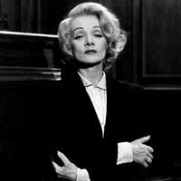
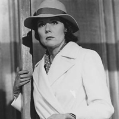
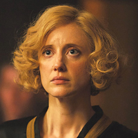